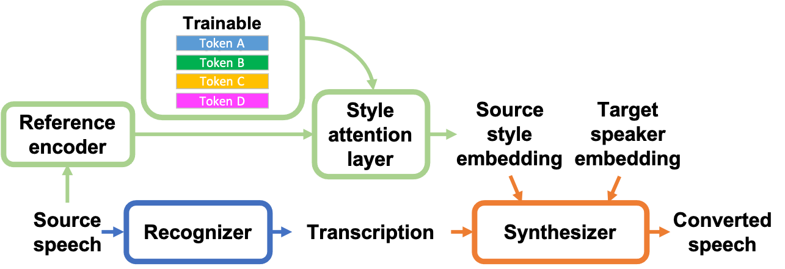
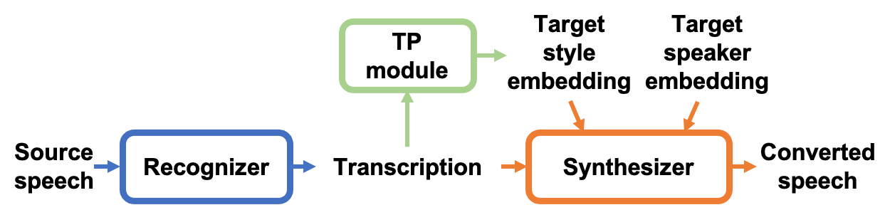

Abstract: A promising approach to voice conversion (VC) is to first use an automatic speech recognition (ASR) model to transcribe the source speech into the underlying linguistic contents, which are then taken as input by a text-to-speech (TTS) system to generate the converted speech. Such a paradigm, referred to as ASR+TTS, overlooks the modeling of prosody, which plays an important role in speech naturalness and conversion similarity. While few have considered source prosody transfer (SPT) by transferring prosodic clues from the source speech, to address the speaker mismatch during training and conversion, in this work, we propose to directly predict such clues from the linguistic representation in a target speaker dependent manner. We evaluate both methods on the voice conversion challenge 2020 benchmark and considered different linguistic representations. Results demonstrate the effectiveness of the proposed TTP method in both objective and subjective evaluations.
Methods (Models)
Source prosody transfer (SPT)
Target text prediction (TTP)


Dataset
We evaluated our proposed framework on the Voice Conversion Challenge 2020 (VCC 2020) dataset. [Paper][Datasets]
Representations
We compared the prosody modeling methods on three kinds of representation.
Text: This is one of the baseline in VCC2020, where the implementation can be found on ESPnet, an open-source end-to-end speech processing toolkit.
BNF: Frame-level continuous bottleneck features from a supervised ASR model.
VQW2V: Frame-level discrete features from a self-supervised vq-wav2vec model. The checkpoint is provided by fairseq.